سواتر الحديد
الكلاسيكية من شركة القاسم تمثل الخيار الأمثل لأصحاب الذوق الرفيع الذين يبحثون عن الجمال مع
المتانة. نستخدم في تصنيعها حديد عالي الجودة مقاوم للصدأ، مع تصميمات تقليدية تعكس الأصالة
العربية. هذه السواتر مناسبة للفلل والقصور حيث تضيف لمسة من الفخامة مع توفير خصوصية تامة.
نوفر سواتر
حديد كلاسيكية بأشكال متنوعة مثل الفورفورجيه الفرنسي والتصاميم العربية الأصيلة، مع إمكانية طلائها
بألوان تناسب واجهة المبنى. جميع منتجاتنا تخضع لمعايير جودة صارمة تضمن طول العمر الافتراضي.
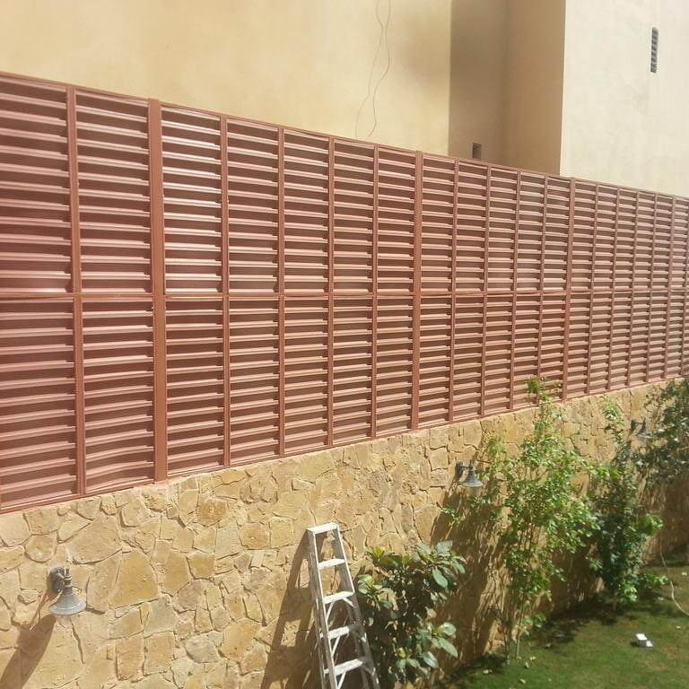
سواتر خشبية طبيعية
سواتر خشبية تعانق الطبيعة
سواتر خشبية
مصنوعة من أفضل أنواع الأخشاب الطبيعية المعالجة ضد الرطوبة والحشرات. مثالية للحدائق المنزلية
والمتنزهات والأماكن التي تحتاج لمسة دافئة من الطبيعة. الخشب المستخدم مقاوم للتقلبات الجوية
ومعالج حرارياً لضمان عدم التشوه.
نوفر تشكيلة
واسعة من أنواع الخشب مثل الساج، الأرو، والصنوبر المعالج. يمكن تركيب السواتر الخشبية بارتفاعات
مختلفة مع إمكانية إضافة نباتات متسلقة لخلق جدار نباتي حي.
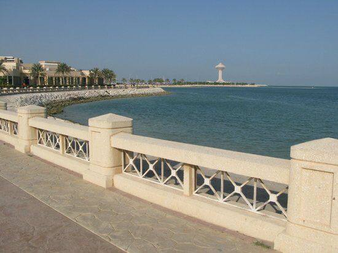
سواتر خرسانية حديثة
سواتر خرسانية بعمر افتراضي طويل
السواتر
الخرسانية من الحلول المثالية للمباني التجارية والصناعية حيث تحتاج لمتانة عالية وأمان كامل.
نستخدم خرسانة مسلحة بمواصفات قياسية مع إضافات تحسن من مقاومتها للعوامل الجوية. يمكن تشطيبها بطرق
مختلفة مثل الدهان أو الكسوة الحجرية.
ميزة السواتر
الخرسانية تكمن في قوة تحملها العالية ومقاومتها للحريق والاختراق. نوفر تصميمات متنوعة تناسب مختلف
الأذواق والميزانيات.
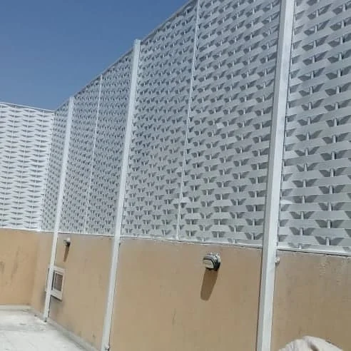
سواتر ألومنيوم خفيفة
سواتر ألومنيوم: الخفة مع القوة
سواتر
الألومنيوم خيار ممتاز للمناطق التي تحتاج حلولاً سريعة التركيب وخفيفة الوزن. الألومنيوم المستخدم
مقاوم للصدأ تماماً ولا يحتاج صيانة دورية. مثالي للمشاريع المؤقتة والمهرجانات والأحداث الموسمية.
نوفر سواتر
ألومنيوم قابلة للفك والتركيب بسهولة، مع إمكانية إعادة استخدامها في مواقع مختلفة. متوفرة بألوان
متعددة ومقاومة للخدش.
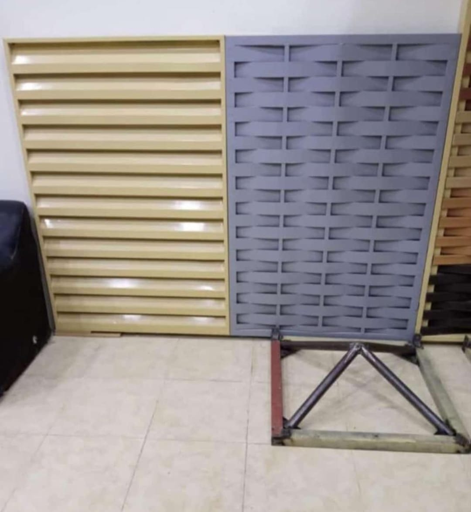
سواتر بلاستيكية مقاومة
سواتر بلاستيكية للاستخدامات
الخارجية
السواتر
البلاستيكية المصنوعة من مواد PVC متينة مقاومة للعوامل الجوية والماء. خيار اقتصادي مثالي للمسابح
والمناطق الرطبة حيث تحتاج مواد لا تتأثر بالماء. يمكن تنظيفها بسهولة ولا تتطلب صيانة.
متوفرة
بألوان مختلفة وأشكال متنوعة، مع إمكانية تركيبها بشكل مؤقت أو دائم حسب الاحتياج. مثالية للاستخدام
في المدارس والملاعب.
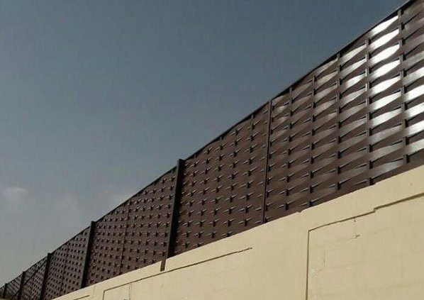
سواتر معدنية صناعية
سواتر معدنية للاستخدامات
الصناعية
سواتر معدنية
مصممة خصيصاً للمصانع والمستودعات والمنشآت الصناعية. مصنوعة من صفائح معدنية مجلفنة مقاومة للصدمات
والتآكل. توفر أماناً عالياً وتحافظ على خصوصية المنشآت الصناعية.
يمكن تركيبها
بارتفاعات مختلفة حسب متطلبات الأمن والسلامة. متوفرة مع بوابات صناعية وفتحات مراقبة حسب الحاجة.
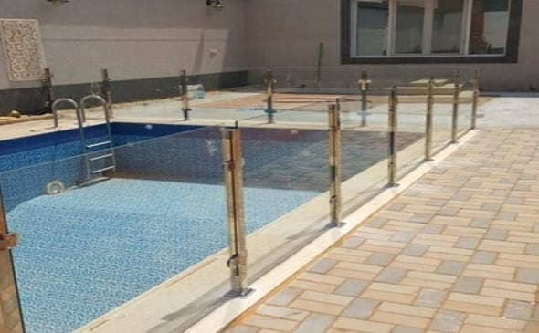
سواتر زجاجية عازلة
سواتر زجاجية: الأناقة مع الوضوح
سواتر زجاجية
مصنوعة من زجاج أمان مقوى معالَج حرارياً. مثالية للمكاتب والمباني الإدارية حيث تحتاج للضوء
الطبيعي مع الخصوصية. يمكن تركيبها بزجاج شفاف أو معتم حسب الرغبة.
نوفر سواتر
زجاجية بعزل صوتي ممتاز، مع إمكانية إضافة طبقات خاصة للحماية من الأشعة فوق البنفسجية. سهلة
التنظيف والمحافظة عليها.
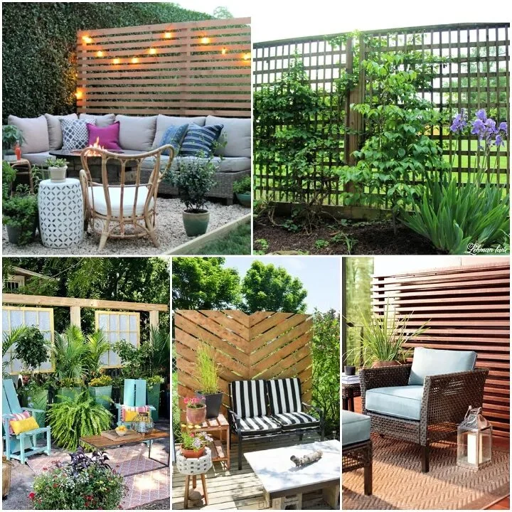
سواتر نباتية طبيعية
سواتر نباتية: جدار أخضر حي
سواتر نباتية
مصنوعة من نباتات متسلقة على هياكل معدنية أو خشبية. تخلق بيئة طبيعية جميلة وتساعد على تنقية
الهواء. مناسبة للمنازل التي تبحث عن لمسة طبيعية في تصميمها.
نختار نباتات
مناسبة للمناخ المحلي لا تحتاج الكثير من العناية، مع نظام ري أوتوماتيكي لضمان نموها المستمر. تضيف
جمالاً طبيعياً وتوفر ظلاً طبيعياً.
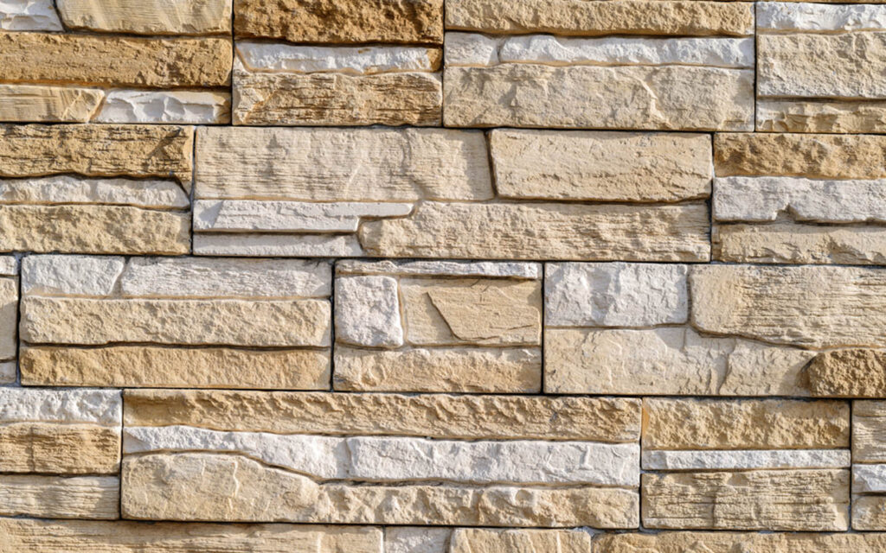
سواتر حجرية طبيعية
سواتر حجرية: الفخامة والعراقة
سواتر حجرية
مصنوعة من الحجر الطبيعي بألوان وأنواع مختلفة. تعطي مظهراً فخماً وعريقاً للمباني، مع متانة
استثنائية تتحمل جميع الظروف الجوية. مناسبة للقصور والفلل الفاخرة.
نستخدم أحجار
طبيعية مثل الجرانيت، الرخام، والحجر الرمالي، مع تقنيات تركيب متطورة تضمن ثباتها لفترات طويلة.
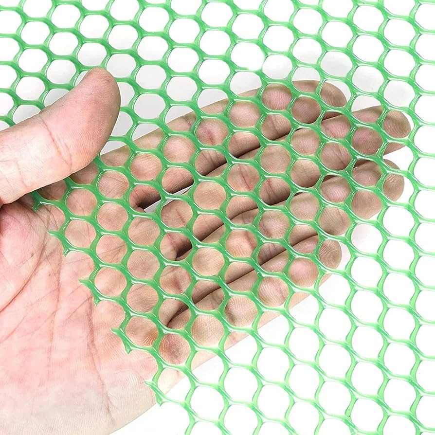
سواتر شبكية للاستادات
سواتر شبكية للملاعب والاستادات
سواتر شبكية
مصنوعة من أسلاك فولاذية مجلفنة، مثالية للملاعب الرياضية والاستادات. تسمح بمرور الهواء والرؤية مع
توفير الحماية اللازمة. مقاومة للشد والصدمات.
يمكن تركيبها
بارتفاعات مختلفة حسب متطلبات الأمان، مع إمكانية إضافة بوابات ومداخل خاصة. سهلة الصيانة والتنظيف.
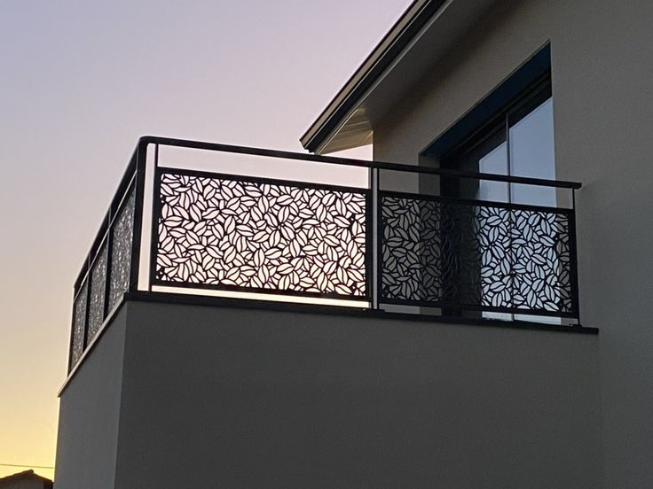
سواتر مودرن حديثة
سواتر مودرن: تصميمات عصرية
مبتكرة
سواتر
بتصميمات حديثة وعصرية تجمع بين الشكل والوظيفة. تستخدم مواد متطورة مثل المركبات الخشبية
والبلاستيك المقوى، مع خطوط هندسية نظيفة. مناسبة للفلل المعاصرة والمباني الحديثة.
نقدم تصميمات
مخصصة تناسب ذوق العميل، مع إمكانية دمج الإضاءة LED لخلق تأثيرات جمالية ليلاً.
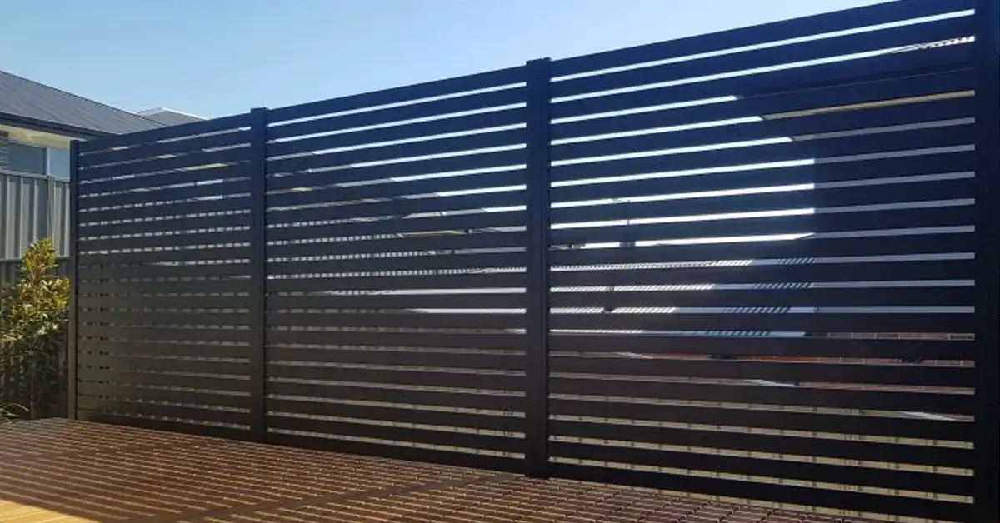
سواتر معدنية مخرومة
سواتر معدنية مخرومة: التهوية مع
الخصوصية
سواتر معدنية
مخرومة تسمح بمرور الهواء مع الحفاظ على الخصوصية البصرية. مثالية للأماكن التي تحتاج تهوية جيدة
مثل مواقف السيارات والورش. يمكن تصميم الثقوب بأشكال هندسية جمالية.
مصنوعة من
صفائح معدنية مجلفنة معالجة ضد الصدأ، مع إمكانية طلائها بألوان مختلفة حسب الطلب.
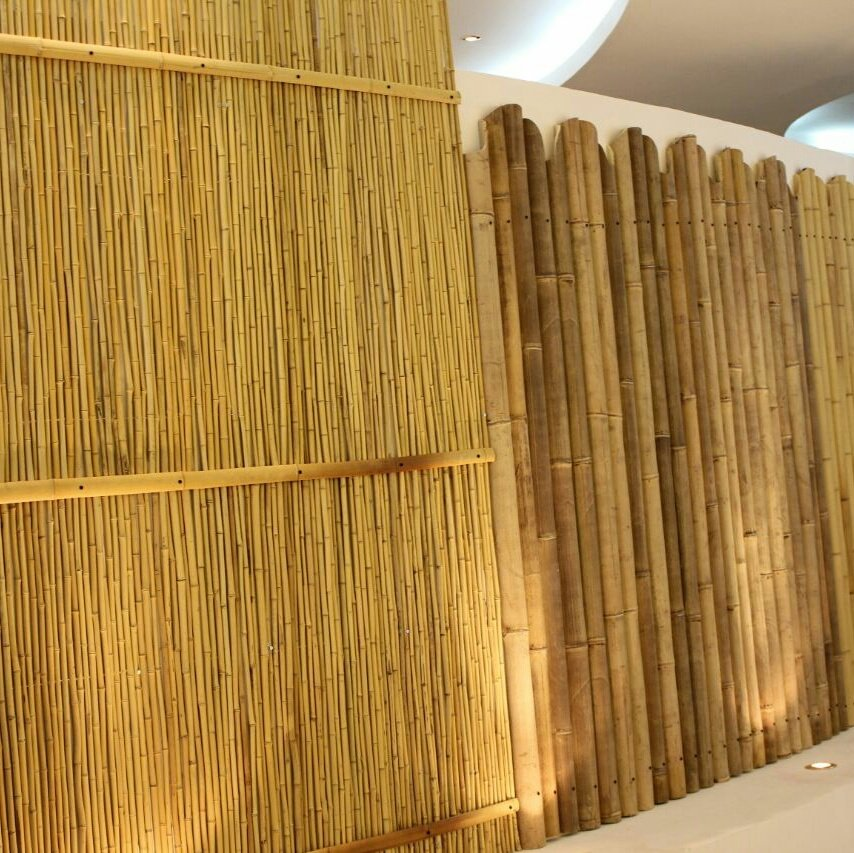
سواتر خيزران طبيعي
سواتر خيزران: الطبيعة في أبسط
صورها
سواتر مصنوعة
من الخيزران الطبيعي المعالج، تعطي إحساساً بالطبيعة والاسترخاء. مناسبة للمقاهي الخارجية
والمنتجعات السياحية والأماكن الترفيهية. خفيفة الوزن وسهلة التركيب.
الخيزران
المستخدم معالج ضد الرطوبة والحشرات، مع إمكانية طلائه بمواد حافظة طبيعية. يضيف جمالاً استوائياً
للمكان.
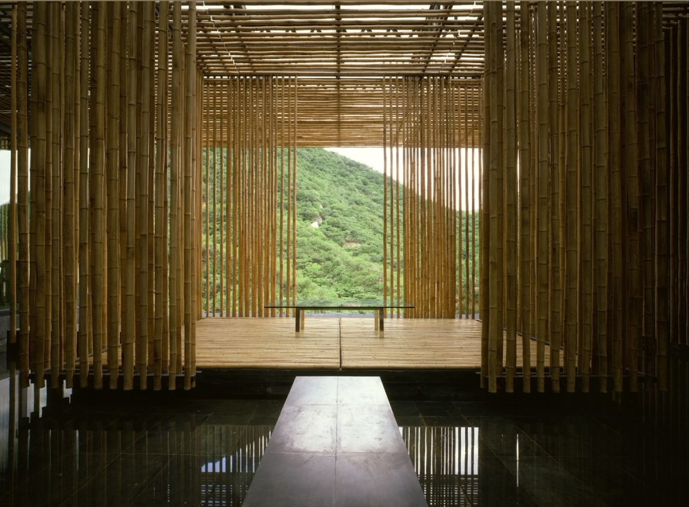
سواتر قماشية للمناسبات
سواتر قماشية: حلول سريعة ومرنة
سواتر قماشية
مصنوعة من أقمشة متينة مقاومة للماء والأشعة فوق البنفسجية. مثالية للمناسبات والأحداث المؤقتة،
الحفلات، والمعارض. يمكن طباعة شعارات أو رسومات عليها.
سواتر مصنوعة
من طوب زجاجي بألوان وتصاميم متنوعة. تسمح بمرور الضوء مع الحفاظ على الخصوصية، تخلق تأثيرات ضوئية
جميلة داخل المكان. مناسبة للمباني الحديثة والمتاحف والمقاهي.
نوفر تشكيلة
واسعة من ألوان وأنماط الطوب الزجاجي، مع إمكانية تصميم تركيبات فنية مخصصة.
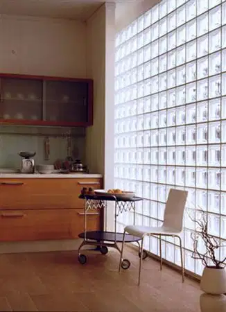
سواتر معدنية ملونة
سواتر معدنية بألوان جريئة
سواتر معدنية
مطبوعة أو مطلية بألوان زاهية وجريئة. مثالية للمدارس، الحدائق العامة، والمنشآت الترفيهية التي
تحتاج لألوان مشرقة. الطلاء المستخدم مقاوم للتغير اللوني بفعل الشمس.
يمكن طباعة
رسومات تعليمية أو ترفيهية على السواتر، مما يجعلها عنصراً تعليمياً وجمالياً في نفس الوقت.
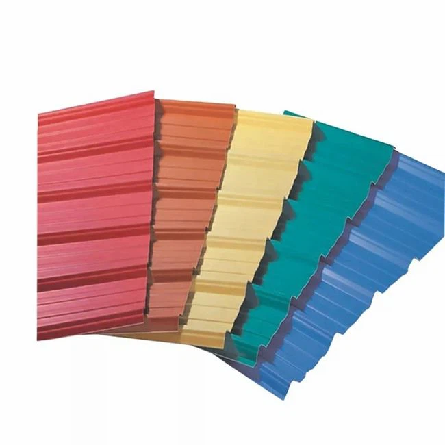
سواتر خشب صناعي
سواتر خشب صناعي: الجمال بلا
متاعب
سواتر مصنوعة
من خشب صناعي (WPC) يجمع بين مظهر الخشب الطبيعي ومتانة البلاستيك. لا تحتاج طلاء ولا تتأثر بالماء
أو الحشرات. مثالية للمسابح والمناطق الرطبة.
متوفرة
بألوان وأشكال مختلفة، سهلة التنظيف ولا تحتاج صيانة دورية. عمر افتراضي طويل يصل إلى 25 سنة.
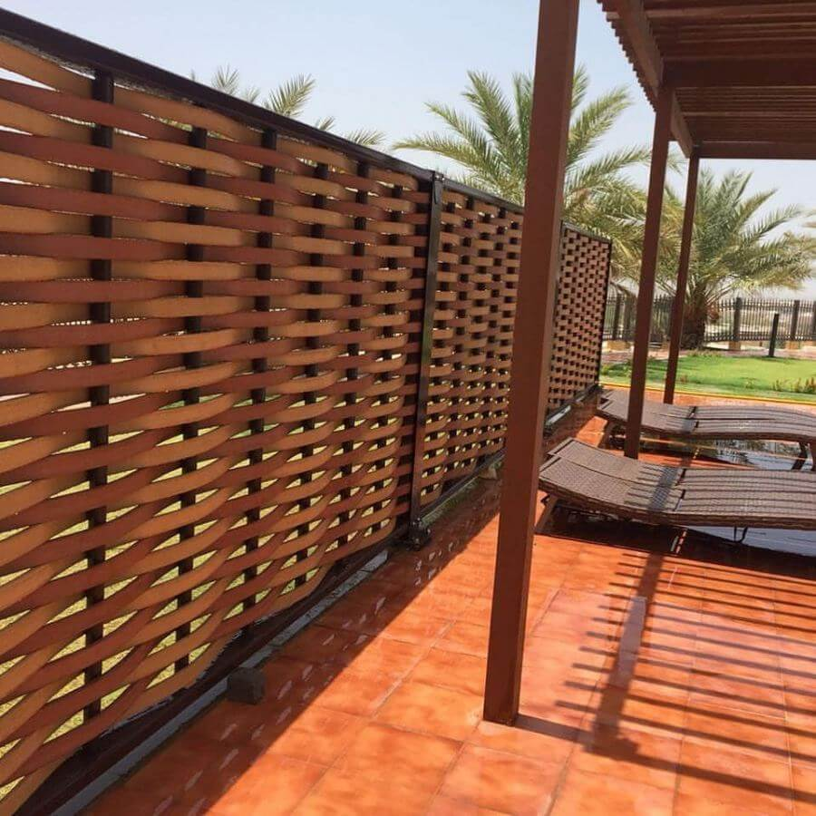
سواتر معدنية مموجة
سواتر معدنية مموجة: القوة مع
المرونة
سواتر مصنوعة
من صفائح معدنية مموجة تعطي قوة إضافية ومقاومة للرياح. مناسبة للمناطق ذات الرياح القوية والسواحل.
الشكل المموج يضيف بعداً جمالياً ويخفي الخدوش البسيطة.
يمكن تركيبها
بسرعة وسهولة، مع إمكانية طلائها بألوان مختلفة. متانة عالية مع صيانة قليلة.
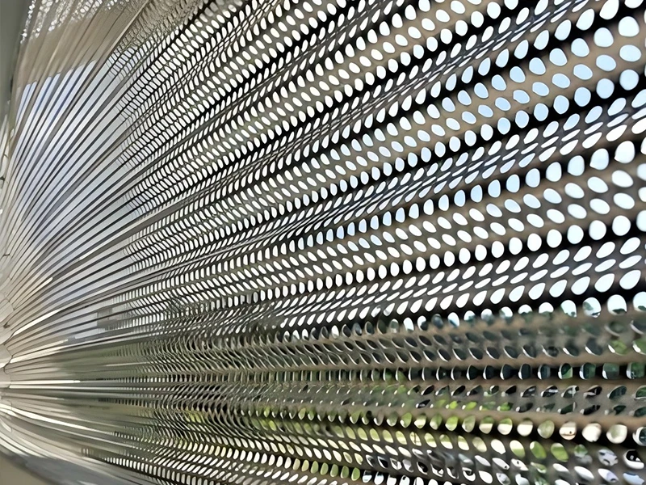
سواتر حجر صناعي
سواتر حجر صناعي: الجمال بتكلفة
معقولة
سواتر مصنوعة
من حجر صناعي يقلد الحجر الطبيعي بدقة عالية ولكن بتكلفة أقل. خفيفة الوزن وسهلة التركيب، مع مقاومة
جيدة للعوامل الجوية. مناسبة للفلل والمباني التجارية.
متوفرة
بمجموعة واسعة من الألوان والقوام، مع إمكانية قصها وتشكيلها بسهولة. لا تحتاج صيانة خاصة.
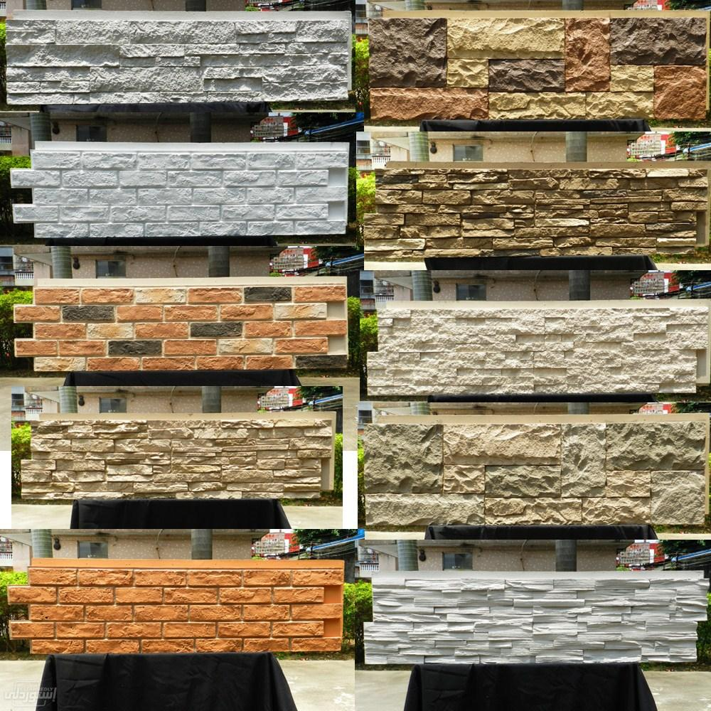
سواتر مركبة متعددة المواد
سواتر مركبة: إبداع لا حدود له
سواتر تجمع
بين عدة مواد مثل الحديد والزجاج، الخشب والحجر، أو المعدن والبلاستيك. تسمح بتصميمات فريدة تجمع
بين مميزات المواد المختلفة. كل مشروع يكون فريداً حسب رؤية العميل والمكان.
فريق التصميم
لدينا يعمل معك لخلق ساتر مركب يناسب ذوقك وميزانيتك، مع ضمان الانسجام بين المواد المختلفة.